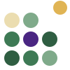
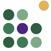
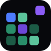
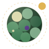
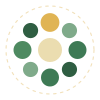

المكعبات صارت دوائر — كل دائرة كوكب صغير، والذهبية قمر يطلع من الشبكة.

الشعار الأساسي — نفس بناء الشعار القديم (٣×٣ + القمر الذهبي)، بس دائري.
نفس الملف يشتغل على الأسود وعلى الكريمي (نسخة اللون الفاتح فيها الدائرة الكريمية أخضر حتى ما تختفي).
على الأسود #0E0E0A

على الكريمي #F1EBDD

أيقونة التطبيق / favicon
يتقرأ حتى في مقاس ١٦ بكسل، والأيقونة لها نسخة «أثقل» شوي للمقاسات الصغيرة.
اخترْتها من روح الشعار نفسه: الدوائر نفسها، بس مركّبة كأنها عالم.

كوكب إيلان — الكوكب نفسه مبني من دوائر الشعار، والقمر الذهبي يمشي في مدار منقّط.
تشتغل حلو كبيرة (البداية، البانر، صورة الحساب) أكثر من الأيقونة الصغيرة.

حلقة العوالم — عالم في النص، وعوالم صغيرة تدور حوله، والقمر الذهبي فوق.
أقرب إحساس لـ«إيلان دول = عالم من عوالم»، وتنفع أيقونة لمتجر التطبيقات.
لو احتجت شعار كامل (دائرة + اسم) — الملفات الجاهزة تبقى الشعار لحاله، والاسم يتكتب بخط Cairo في الموقع.
#EBDDB0#7FAA8A#4E8A61#3E7A55#2F5E42#4A2682#E0B454#0E0E0A